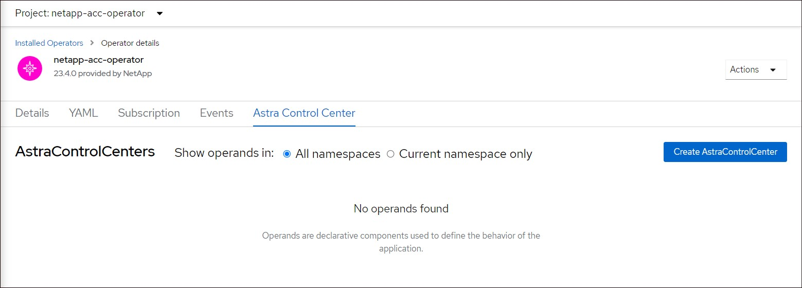

版本資訊
版本資訊
使用OpenShift作業系統集線器安裝Astra Control Center
 建議變更
建議變更
如果您使用Red Hat OpenShift、可以使用Red Hat認證的操作員來安裝Astra Control Center。請使用此程序從安裝Astra Control Center "Red Hat生態系統目錄" 或使用Red Hat OpenShift Container Platform。
完成此程序之後、您必須返回安裝程序、才能完成 "剩餘步驟" 以驗證安裝是否成功並登入。
-
* 符合環境先決條件 * ： "開始安裝之前、請先準備好環境以進行Astra Control Center部署"。

在第三個故障網域或次要站台中部署 Astra Control Center 。這是應用程式複寫和無縫災難恢復的建議。 -
* 確保健全的叢集操作員和 API 服務 * ：
-
從OpenShift叢集確保所有叢集操作員都處於健全狀態：
oc get clusteroperators -
從OpenShift叢集、確保所有API服務都處於健全狀態：
oc get apiservices
-
-
* 確保可路由的 FQDN* ：您打算使用的 Astra FQDN 可路由至叢集。這表示您在內部DNS伺服器中有DNS項目、或是使用已註冊的核心URL路由。
-
* 取得 OpenShift 權限 * ：您將需要所有必要的權限、以及對 Red Hat OpenShift Container Platform 的存取權限、才能執行所述的安裝步驟。
-
* 設定憑證管理員 * ：如果叢集中已存在憑證管理員、您需要執行一些動作 "必要步驟" 因此Astra Control Center不會安裝自己的憑證管理程式。依預設、Astra Control Center會在安裝期間安裝自己的憑證管理程式。
-
* 設定 Kubernetes 入口控制器 * ：如果您的 Kubernetes 入口控制器負責管理外部服務存取、例如叢集中的負載平衡、則您必須將其設定為與 Astra Control Center 搭配使用：
-
建立運算子命名空間：
oc create namespace netapp-acc-operator
-
"完成設定" 適用於您的入口控制器類型。
-
-
* （僅限 ONTAP SAN 驅動程式）啟用多重路徑 * ：如果您使用的是 ONTAP SAN 驅動程式、請務必在所有 Kubernetes 叢集上啟用多重路徑。
您也應該考慮下列事項：
-
* 取得 NetApp Astra 控制影像登錄的存取權限 * ：
您可以選擇從 NetApp 映像登錄取得 Astra Control 的安裝映像和功能增強功能、例如 Astra Control Provisioner 。
-
記錄您登入登錄所需的 Astra Control 帳戶 ID 。
您可以在 Astra Control Service 網頁 UI 中看到您的帳戶 ID 。選取頁面右上角的圖示、選取 * API access* 、然後寫下您的帳戶 ID 。
-
從同一頁面選取 * 產生 API 權杖 * 、然後將 API 權杖字串複製到剪貼簿、並將其儲存在編輯器中。
-
登入 Astra Control 登錄：
docker login cr.astra.netapp.io -u <account-id> -p <api-token>
-
-
* 安裝服務網格以進行安全通訊 * ：強烈建議使用來保護 Astra Control 主機叢集通訊通道 "支援的服務網格"。

只有在 Astra Control Center 期間、才能將 Astra Control Center 與服務網格整合 "安裝" 而且不受此程序的影響。不支援從網格環境變更回無網格環境。 若要使用 Istio 服務網格、您必須執行下列動作：
-
新增
istio-injection:enabled在部署 Astra Control Center 之前、請先將標籤貼到 Astra 命名空間。 -
對於 Red Hat OpenShift 叢集、您需要定義
NetworkAttachmentDefinition在所有相關的 Astra Control Center 命名空間上 (netapp-acc-operator、netapp-acc、netapp-monitoring應用程式叢集或任何已取代的自訂命名空間）。cat <<EOF | oc -n netapp-acc-operator create -f - apiVersion: "k8s.cni.cncf.io/v1" kind: NetworkAttachmentDefinition metadata: name: istio-cni EOF cat <<EOF | oc -n netapp-acc create -f - apiVersion: "k8s.cni.cncf.io/v1" kind: NetworkAttachmentDefinition metadata: name: istio-cni EOF cat <<EOF | oc -n netapp-monitoring create -f - apiVersion: "k8s.cni.cncf.io/v1" kind: NetworkAttachmentDefinition metadata: name: istio-cni EOF
-
|
|
請勿刪除Astra Control Center運算子（例如、 kubectl delete -f astra_control_center_operator_deploy.yaml）在Astra Control Center安裝或操作期間、隨時避免刪除Pod。
|
下載並擷取Astra Control Center
從下列其中一個位置下載 Astra Control Center 影像：
-
*Astra Control Service 映像登錄 * ：如果您不將本機登錄與 Astra Control Center 映像搭配使用、或是您偏好從 NetApp 支援網站 下載套件時使用此方法、請使用此選項。
-
* NetApp 支援網站 * ：如果您將本機登錄與 Astra 控制中心影像搭配使用、請使用此選項。
-
登入 Astra Control Service 。
-
在儀表板上、選取 * 部署自動管理的 Astra Control* 執行個體。
-
依照指示登入 Astra Control 影像登錄、拉出 Astra Control Center 安裝映像、並擷取映像。
-
下載包含Astra Control Center的套裝組合 (
astra-control-center-[version].tar.gz）從 "Astra Control Center 下載頁面"。 -
（建議但可選）下載Astra Control Center的憑證與簽名套件 (
astra-control-center-certs-[version].tar.gz）驗證套件的簽名。tar -vxzf astra-control-center-certs-[version].tar.gzopenssl dgst -sha256 -verify certs/AstraControlCenter-public.pub -signature certs/astra-control-center-[version].tar.gz.sig astra-control-center-[version].tar.gz隨即顯示輸出
Verified OK驗證成功之後。 -
從Astra Control Center套裝組合擷取映像：
tar -vxzf astra-control-center-[version].tar.gz
如果您使用本機登錄、請完成其他步驟
如果您打算將 Astra Control Center 套裝軟體推送至本機登錄、則需要使用 NetApp Astra kubectl 命令列外掛程式。
安裝NetApp Astra kubecl外掛程式
完成這些步驟以安裝最新的 NetApp Astra Kubectl 命令列外掛程式。
NetApp為不同的CPU架構和作業系統提供外掛程式二進位檔。執行此工作之前、您必須先瞭解您的CPU和作業系統。
如果您已從先前的安裝中安裝外掛程式、 "請確定您擁有最新版本" 完成這些步驟之前。
-
列出可用的NetApp Astra kubectl外掛程式二進位檔、並記下作業系統和CPU架構所需的檔案名稱：

KECBECTl外掛程式庫是tar套件的一部分、會擷取到資料夾中 kubectl-astra。ls kubectl-astra/ -
將正確的二進位檔移至目前路徑、並將其重新命名為
kubectl-astra：cp kubectl-astra/<binary-name> /usr/local/bin/kubectl-astra
將映像新增至登錄
-
如果您打算將 Astra Control Center 套件推送至本機登錄、請為您的容器引擎完成適當的步驟順序：
Docker-
切換到tar檔案的根目錄。您應該會看到
acc.manifest.bundle.yaml檔案與這些目錄：acc/
kubectl-astra/
acc.manifest.bundle.yaml -
將Astra Control Center映像目錄中的套件映像推送到本機登錄。執行之前、請先進行下列替換
push-images命令：-
以<BUNDLE_FILE> Astra Control套裝組合檔案的名稱取代 (
acc.manifest.bundle.yaml）。 -
以<MY_FULL_REGISTRY_PATH> Docker儲存庫的URL取代支援；例如 "https://<docker-registry>"。
-
以<MY_REGISTRY_USER> 使用者名稱取代。
-
以<MY_REGISTRY_TOKEN> 登錄的授權權杖取代。
kubectl astra packages push-images -m <BUNDLE_FILE> -r <MY_FULL_REGISTRY_PATH> -u <MY_REGISTRY_USER> -p <MY_REGISTRY_TOKEN>
-
Podman-
切換到tar檔案的根目錄。您應該會看到這個檔案和目錄：
acc/
kubectl-astra/
acc.manifest.bundle.yaml -
登入您的登錄：
podman login <YOUR_REGISTRY> -
針對您使用的Podman版本、準備並執行下列其中一個自訂指令碼。以包含任何子目錄的儲存庫URL取代<MY_FULL_REGISTRY_PATH> 。
Podman 4export REGISTRY=<MY_FULL_REGISTRY_PATH> export PACKAGENAME=acc export PACKAGEVERSION=24.02.0-69 export DIRECTORYNAME=acc for astraImageFile in $(ls ${DIRECTORYNAME}/images/*.tar) ; do astraImage=$(podman load --input ${astraImageFile} | sed 's/Loaded image: //') astraImageNoPath=$(echo ${astraImage} | sed 's:.*/::') podman tag ${astraImageNoPath} ${REGISTRY}/netapp/astra/${PACKAGENAME}/${PACKAGEVERSION}/${astraImageNoPath} podman push ${REGISTRY}/netapp/astra/${PACKAGENAME}/${PACKAGEVERSION}/${astraImageNoPath} donePodman 3export REGISTRY=<MY_FULL_REGISTRY_PATH> export PACKAGENAME=acc export PACKAGEVERSION=24.02.0-69 export DIRECTORYNAME=acc for astraImageFile in $(ls ${DIRECTORYNAME}/images/*.tar) ; do astraImage=$(podman load --input ${astraImageFile} | sed 's/Loaded image: //') astraImageNoPath=$(echo ${astraImage} | sed 's:.*/::') podman tag ${astraImageNoPath} ${REGISTRY}/netapp/astra/${PACKAGENAME}/${PACKAGEVERSION}/${astraImageNoPath} podman push ${REGISTRY}/netapp/astra/${PACKAGENAME}/${PACKAGEVERSION}/${astraImageNoPath} done
指令碼所建立的映像路徑應如下所示、視登錄組態而定： https://downloads.example.io/docker-astra-control-prod/netapp/astra/acc/24.02.0-69/image:version
-
-
變更目錄：
cd manifests
尋找操作員安裝頁面
-
請完成下列其中一個程序、以存取操作員安裝頁面：
Red Hat OpenShift Web 主控台-
登入OpenShift Container Platform UI。
-
從側功能表中、選取*運算子>運算子中樞*。
您只能使用此運算子升級至 Astra Control Center 的目前版本。 -
搜尋
netapp-acc然後選取 NetApp Astra 控制中心操作員。
Red Hat生態系統目錄-
選擇NetApp Astra Control Center "營運者"。
-
選擇 * 部署與使用 * 。

-
安裝操作員
-
完成*安裝操作員*頁面並安裝操作員：
此運算子可用於所有叢集命名空間。 -
在操作員安裝過程中、系統會自動建立運算子命名空間或「NetApp-acc operator」命名空間。
-
選取手動或自動核准策略。
建議手動核准。每個叢集只能執行單一運算子執行個體。 -
選擇*安裝*。
如果您選擇手動核准策略、系統會提示您核准此操作員的手動安裝計畫。
-
-
從主控台移至「作業系統集線器」功能表、確認操作員已成功安裝。
安裝Astra Control Center
-
從Astra控制中心操作員* Astra控制中心*索引標籤內的主控台、選取*建立適用的*。

-
填寫「Create適用的」表單欄位：
-
保留或調整Astra Control Center名稱。
-
新增Astra Control Center的標籤。
-
啟用或停用自動支援。建議保留「自動支援」功能。
-
輸入Astra Control Center FQDN或IP位址。請勿進入
http://或https://在「地址」欄位中。 -
輸入 Astra Control Center 版本、例如 24.02.0-69 。
-
輸入帳戶名稱、電子郵件地址和管理員姓氏。
-
選擇的Volume回收原則
Retain、Recycle`或 `Delete。預設值為Retain。 -
選取安裝的規模大小。
Astra 預設會使用高可用度（ HA ） scaleSize的Medium，用於在 HA 中部署大多數服務並部署多個複本以實現冗餘。與scaleSize做為Small、 Astra 將減少所有服務的複本數量、但基本服務除外、以減少使用量。 -
-
通用 (
ingressType: "Generic"）（預設）如果您使用另一個入口控制器、或偏好使用自己的入口控制器、請使用此選項。Astra Control Center 部署完成後、您需要設定 "入口控制器" 使用URL公開Astra Control Center。
-
* AccTraefik* (
ingressType: "AccTraefik"）如果您不想設定入口控制器、請使用此選項。這會部署Astra控制中心
traefik閘道即Kubernetes「負載平衡器」類型服務。
Astra Control Center使用「負載平衡器」類型的服務 (
svc/traefik（在Astra Control Center命名空間中）、並要求指派可存取的外部IP位址。如果您的環境允許負載平衡器、但您尚未設定負載平衡器、則可以使用MetalLB或其他外部服務負載平衡器、將外部IP位址指派給服務。在內部DNS伺服器組態中、您應該將Astra Control Center所選的DNS名稱指向負載平衡的IP位址。 -
如需「負載平衡器」和入口服務類型的詳細資訊、請參閱 "需求"。 -
在 * 映像登錄 * 中，除非您設定本機登錄，否則請使用預設值。如果是本機登錄、請將此值取代為您在上一個步驟中推入影像的本機映像登錄路徑。請勿進入
http://或https://在「地址」欄位中。 -
如果您使用需要驗證的映像登錄、請輸入映像秘密。
如果您使用需要驗證的登錄、 在叢集上建立秘密。 -
輸入管理員名字。
-
設定資源擴充。
-
提供預設的儲存類別。
如果已設定預設儲存類別、請確定它是唯一具有預設註釋的儲存類別。 -
定義客戶需求日處理偏好設定。
-
-
選取「Yaml」檢視以檢閱您所選的設定。
-
選取「Create」（建立）。
建立登錄機密
如果您使用需要驗證的登錄、請在 OpenShift 叢集上建立密碼、然後在中輸入密碼名稱 Create AstraControlCenter 表單欄位。
-
為Astra Control Center運算子建立命名空間：
oc create ns [netapp-acc-operator or custom namespace]
-
在此命名空間中建立秘密：
oc create secret docker-registry astra-registry-cred -n [netapp-acc-operator or custom namespace] --docker-server=[your_registry_path] --docker username=[username] --docker-password=[token]
Astra Control僅支援Docker登錄機密。 -
填寫中的其餘欄位 「Create」（建立）「吧！Control Center」表單欄位。